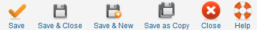

Edit your group or add new ones from this screen. With groups you can limit the ability to add events to categories,
to selected users. Only members of this group can add events to this category.
Edit your group or add new ones from this screen. With groups you can limit the ability to add events to categories,
to selected users. Only members of this group can add events to this category.
 Edit your group or add new ones from this screen. With groups you can limit the ability to add events to categories,
to selected users. Only members of this group can add events to this category.
Edit your group or add new ones from this screen. With groups you can limit the ability to add events to categories,
to selected users. Only members of this group can add events to this category.
Tip
Make use of the description if you have to manage a high number of groups. This makes it easier to remember the purpose of a group. A descriptive group name is also helpful.
To access this screen use: Components → JEM → Add Group or by clicking a group in the overview
 Super Administrator
Super Administrator
 Administrator
Administrator
 Manager
Manager

Save: Saves the group and stays in the Edit Group screen.
Save & Close: Saves the group and returns to the overview.
Save & New: Saves the group and opens a new clean Edit Group Screen .
Save as Copy: Saves the group as a new entry and stays in the Edit Group screen.
Close: Cancels the action. Any modification is lost.
Help: Opens this help screen.
Group name: Enter or edit (if needed) the title of the group here.
Maintainers: In the left field all available users are listed. You can assign one ore more from them with a double click on the user, or one click on the user to select, and then another click on the arrow button. This will list the user in the right hand column.
Description: Use this field to explain the purpose of the group.
Permissions: This is the group access level. Here you can set the permissions per group.